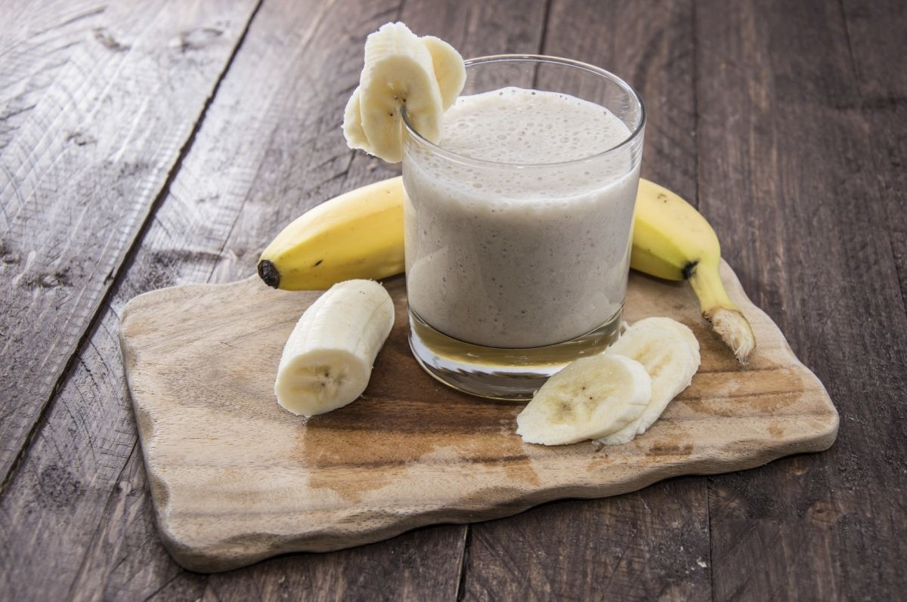

Receta de Licuado de Platano

Licuado de Platano
Esta receta es sencilla y rapida, ideal para personas ocupadas que necesitan salir rapido de casa y no lo quieren hacer con el estomago vacío
Ingredientes
- 400 ml de leche
- Un platano maduro
- 1/3 de taza de avena
- Azucar o endulzante artificial
- Una cucharadita de esencia de vainilla
Pasos
- Agregar a la licuadora la leche
- Agregar la avena y el platano, debe ser despues de la leche para que giren bien las aspas
- Agregar endulzante o azucar al gusto
- Licuar hasta que tenga una consistencia espumosa y ligera
- Servir